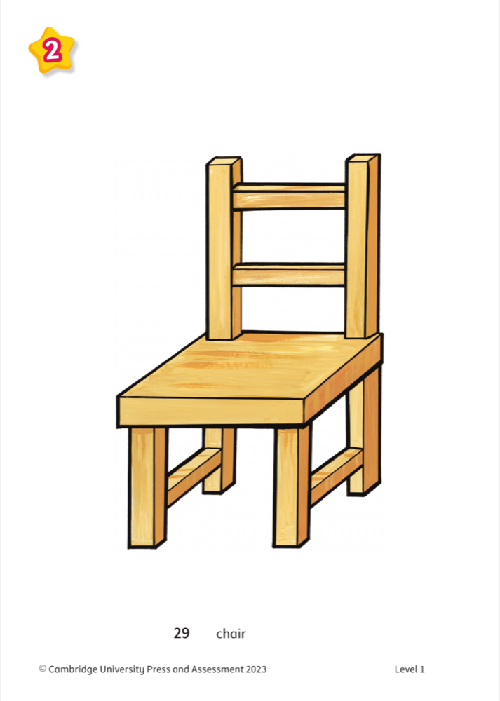
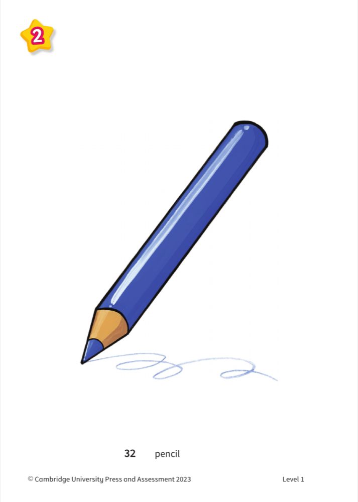
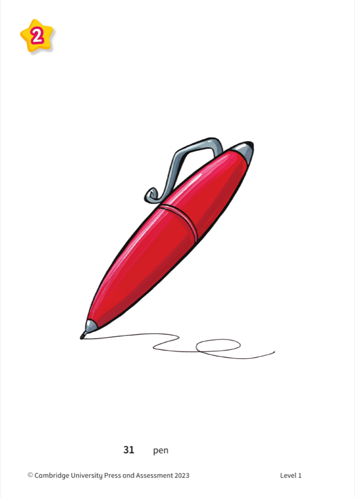
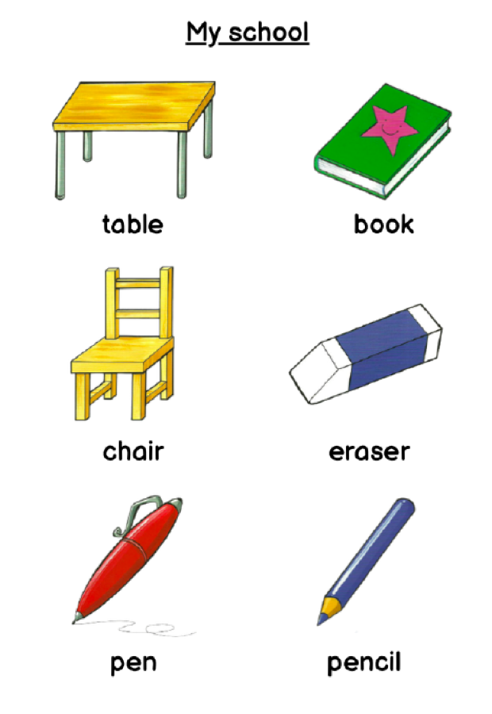
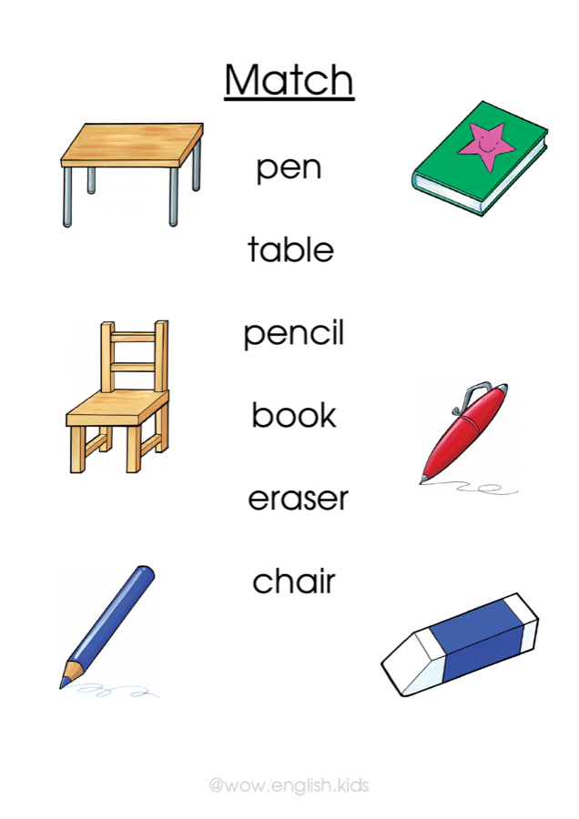
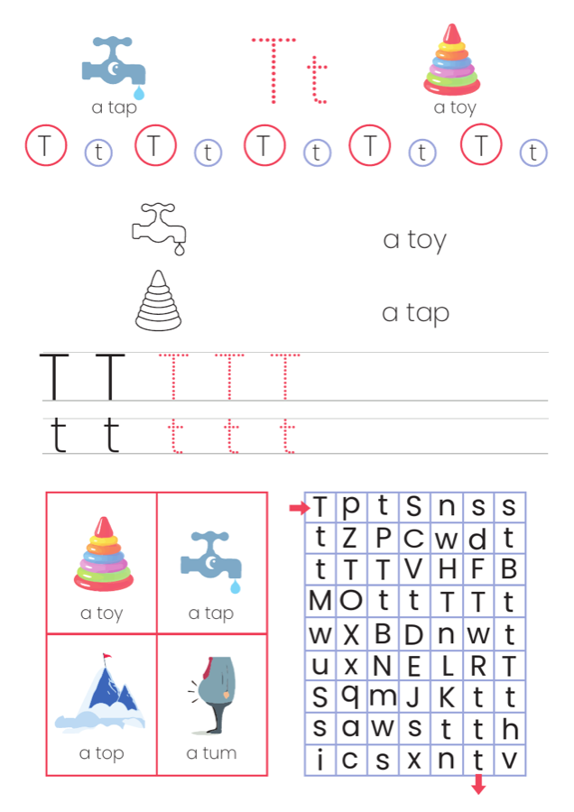
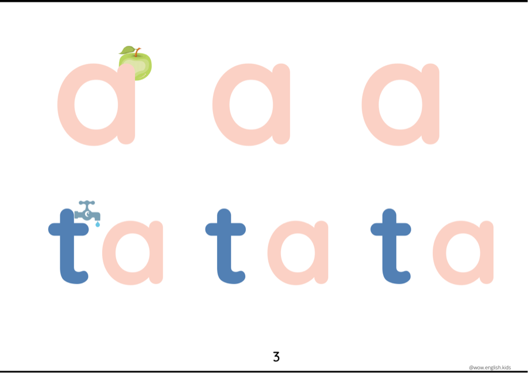

New words!
Tap a card — say the word!
🎯 Tap a picture — the word grows BIG! 👆






👏 Clap it: chair! table! eraser! pencil! pen! book!
💬 The circle: How are you? — ask your friend! ⭕
🧺 Prepare ahead
🎒 the bag: a pen · a pencil · a book · an eraser inside · ⚪ the ball
🖍️ coloured pencils on the tables · 🃏 Unit 2 flashcards (chair · table · eraser · pencil · pen · book)
📄 worksheets: My school · Match · Tt + Unscramble (goes home) · 🖼️ poster 3 + the small versions
🧴 GLUE (everything glued in!) · 🧸 a toy + 🪀 a spinning top (Tt realia)
📶✋ Stop and listen!
🖍️ Pick up a BLUE pencil! …a red one? a green one?



👏 Clap it: chair! table! eraser! pencil! pen! book!
⭐ Can you find the star? 🔍

🧴 GLUE it into your copybook! 📓

✅ Check with your friend: a tick or a cross!
📖 Read the word… is it TRUE? is it FALSE? 🗣️
👏 Clap it: T-t-toy! T-t-tap! T-t-tummy! T-t-top!

⛔ Tracing? At HOME! 🏠

🧴 The small poster → GLUE it into your copybook! 📓
N n
👀 Look — say — play! Just a taste! 🎉
✏️ Finish the Tt worksheet — trace T t!
🎨 AB p. 10, ex. 2 — draw your table and the objects!
🔗 Unscramble — the worksheet in your bag!
🎬 Point at the new words — say them on video!
ДЗ: дописать лист Tt (обвести) · AB стр. 10 упр. 2 (нарисовать свой стол и школьные вещи) · лист Unscramble · видео с новыми словами в чат.
👋 Goodbye, everyone! Left and right, forward and back… 🎉
🙋 Pardon?
❓ What does ___ mean?
🆘 Can you help me?
🔁 Can you repeat, please?
🇬🇧 How do you say ___ in English?
🤷 I don't understand.